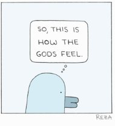

the fish needs to say,
"Something ani't right about this Camel ride-
and I'm Feeling so damn
Thirsty." --Hafiz
My friend had a particularly hard time last week. Hurting. Heavy. Isolating. Binging. Hard to get out of bed and function.
You might have had similar experiences yourself- most people have times like this at some point in their lives, sometimes many points.
Sometimes many many points.
So today’s Tickler will not be its usual adorable, tickle-your-mind-so-you-have-fun-finding-all-this-woo-woo-stuff-yourself, self. Instead, today’s Tickler is cutting to this particular chase.
Which is...
It’s hard to think you’re a person. This person. This You.
Think you are a separate individual contained in the body and you’re going to feel incomplete and inadequate. Think you are a separate individual contained in the body and you’re going to have the “inner critic” tell you that you’re not good enough.
And you will be correct. You feel deficient because you are deficient.
The individual self is indeed incomplete. Small, limited, flawed, odd, trapped- yes.
This is the price for being certain of what you are.
And it's expensive, this near-constant sense of lack. Because there's never enough love, enough success, enough kindness, health, attractiveness, discipline. There's never enough enlightenment. There's always a vague sense of not good enough.
So naturally you try to fill up that sense of missing something. Busyness and productivity, satsangs and retreats, money, love, addictions.
And of course none of that does the job.
Which is additionally painful.
So hopefully once in a while you ask yourself...
SO WHAT?
Because truly, what’s not ok about being insufficient?
Yes you're not perfect, not good enough, not healthy, not enlightened. So what?
What about this unwholey state of affairs actually needs to be fixed?
You might discover that not good enough is actually quite good enough.
There can be enormous relief just in that acceptance.
However, sometimes the requirement to fix is too strong for acceptance. Sometimes the sense of demanding perfection from your self feels urgent.
Sometimes the sense of self rejects this separate being, and urgently longs to connect with something better, something bigger.
Because it only ever wants to get back to the garden.
At those times, you can start with simply noticing the pull to get back to wholeness and perfection again.
Notice the compulsion.
Notice the desire to fill up what’s lacking, what’s empty, with something.
Because just the act of noticing itself, the observation, can change things. (There’s plenty of science and studies proving that observation affects reality.) ***
And then, notice the noticing.
After all, things can’t observe themselves. Things can only be observed from the outside.
No matter what it "feels like," you are either what notices, or what is being noticed.
See which is closer to what you really are- the inauthentic, incomplete, loser individual self, or whatever notices it.
And then see if whatever that is that notices you, watches your self, experiences your self...
See if that's incomplete. See if that’s inadequate. See if that’s in need of fixing, or a drink, or love, or anything at all.
Because how much "more” does everything need? It’s already everything.
Whoa. Look at you.
You’re enormous. You’re complete. You’re perfect.
As is.
You're more than sufficient,
More than good enough,
Already.
Go ahead,
Try keeping that in bed.
*** https://en.wikipedia.org/wiki/Observer_effect_(physics)
every week.
"We are the dreamers in this dream,
The source of the hidden principle is ourselves, and it is fired by our longing to come home." --Tony Parsons
